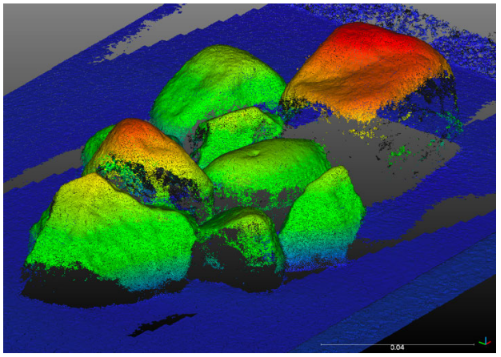
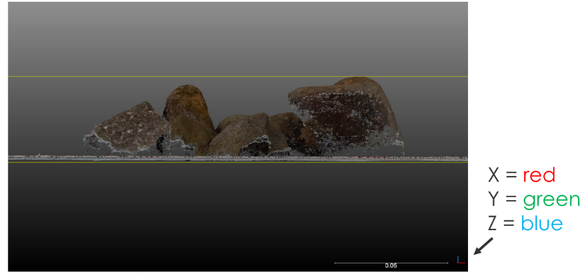

LEVEL 1 基本操作
表示の調整・変更
- 3Dビューの表示
- 回転
- 左マウスを押しながら
- 移動
- 右マウスを押しながら
- ズーム
- マウスホイール
- +/= キー
- 回転

- 点サイズの変更
- 3Dビューの左上の"― +"
- プロパティの "Point size"（点群ごと）

データベースの操作
- データベースの表示
- エンティティ（対象レイヤ）の選択
- データベースツリーで左クリック
- または3Dビューで対象を左クリック
- 表示のオン・オフ
- DBツリーのチェックボックス
- 下位レイヤもオフ
- プロパティの‘Visible’ボタン
- 対象レイヤのみオフ
- DBツリーのチェックボックス
- エンティティ（対象レイヤ）の選択

- エンティティ（レイヤ）の変更
- 新しいグループの作成
- データベースツリー > 右クリック
- エンティティ（レイヤ）の名称変更
- F2 or ダブルクリック
- 新しいグループの作成

色表示の変更

セグメンテーション（手動）
- 対象エンティティ（レイヤ）の選択
- ツールの開始（はさみアイコン）
- Edit > Segment
- 線で囲む
- 多角形 or 四角
- 左クリック：新規頂点
- 右クリック：線を閉じる
- 作業の一時停止可能 →視点を変えて再開
- 線の保存・読出可
- セグメント・イン or アウト
- セグメント後は一時停止状態 → ☑で確定

リサンプリング subsumpling
点群のデータ量削減、一定の点密度
- 対象エンティティ（レイヤ）の選択
- ツール開始
- Edit > Subsample
- リサンプル方法の選択
- ランダム
- 点間隔（space）
- 最小点間距離の指定
- 八分木（octree）
- 新規点群が生成される

※cf. 点密度の計算：Tools > Other > Density

色、法線の編集
- Edit > Colors
- 単一色の設定（Unique or Colorize）
- 高さ（Z値）での色分け Height Ramp
- RGBヒストグラムの調整
- グレースケールへの変換
- スカラー値への変換
- 色情報の計算（NDVIやGRVIなど）
- Edit > Normals
- 法線の計算
- 法線方向の反転
- 法線方向の調整（Orient normals）
- 法線→HSV色空間への変換
- Dip / Dip direction スカラー値への変換

スケーリング
- Edit > Multiply / Scale
- スケール変更

クローン、マージ
- Edit > Clone
- エンティティの複製
★“UNDO”機能代替：やり直しが効く！
- エンティティの複製
- Edit > Merge
- 2つ以上のエンティティを統合（点群とメッシュのみ対応）

断面抽出
- Tools > Segmentation > Cross Section
- 対話的または一括処理（スライス）
- 等値線の抽出（ポリライン）

手動座標変換 transformation
- 視点の変更 « front » view

- 点群を選択しツールを開始
- Edit > Translate / Rotate
- 対象エンティティのみ軸が変更
- 回転軸の選択（Zのみ、など）
- 作業の一時停止可能